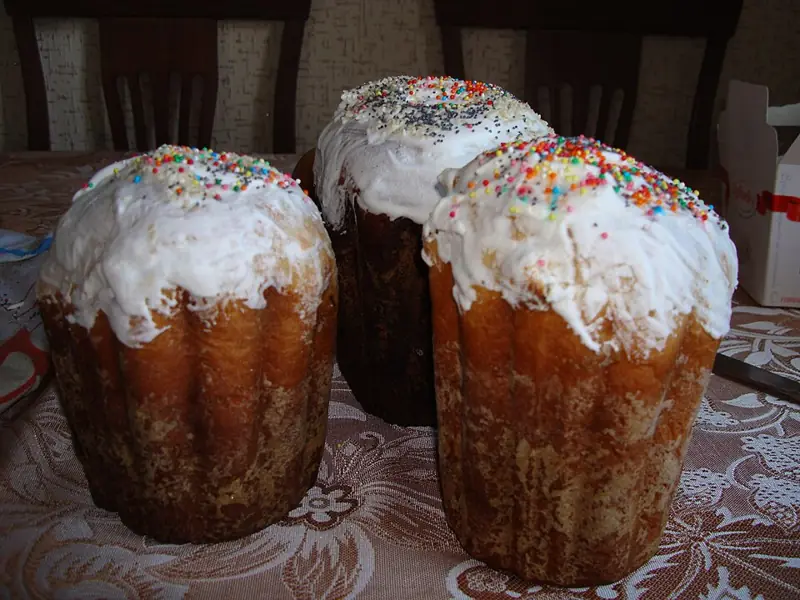

Фото: Tamara Ustinova, CC BY-SA 3.0

Кулич пасхальный
Сдобный дрожжевой кулич с изюмом и белковой глазурью
300 мин10 порц.432 ккал на порциюБ 9 · Ж 13 · У 69Русская кухня
Продукты на 10 порц.
- Мука пшеничная3 стак.
- Молоко1,25 стак.
- Дрожжи сухие3 ч. л.
- Яйцо куриное4 шт
- Сахар250 г
- Сливочное масло100 г
- Ванильный сахар1 пакетик
- Соль2 щеп.
- Изюм100 г
- Лимон по желанию1 ч. л. сока
- Растительное масло1 ст. л.
Как готовить
- Опара: в тёплом молоке (37 °C) размешайте дрожжи, 1 ст. л. сахара и 150 г муки. Накройте и оставьте в тепле на 30-40 минут, пока шапка не поднимется и не появятся пузыри.
- Отделите 1 белок для глазури и уберите в холодильник. 3 яйца и 1 желток разотрите со 150 г сахара, ванильным сахаром и солью.
- Добавьте яичную смесь и растопленное тёплое масло в опару, перемешайте. Подсыпайте оставшуюся муку и месите 10-15 минут, тесто должно быть мягким и отставать от рук.
- Накройте тесто и оставьте в тепле на 1,5-2 часа, пока оно не вырастет в 2 раза.
- Изюм промойте, обсушите, обваляйте в ложке муки и вмешайте в тесто.
- Формы смажьте маслом или застелите пергаментом. Заполните тесто на треть высоты и дайте подойти ещё 40-60 минут, до 2/3 формы.
- Выпекайте при 180 °C (средний жар): маленькие формы 25-30 минут, большие 40-50 минут. Деревянная шпажка должна выходить сухой. Если верх темнеет быстро, накройте фольгой.
- Остудите куличи на боку на полотенце. Белок взбейте с оставшимися 100 г сахара и соком лимона в плотную пену, 5-7 минут, и покройте верх остывших куличей.
Совет. Не открывайте духовку первые 20 минут, иначе кулич осядет. Тесто боится сквозняков, ставьте его подходить в тёплое место без движения воздуха.